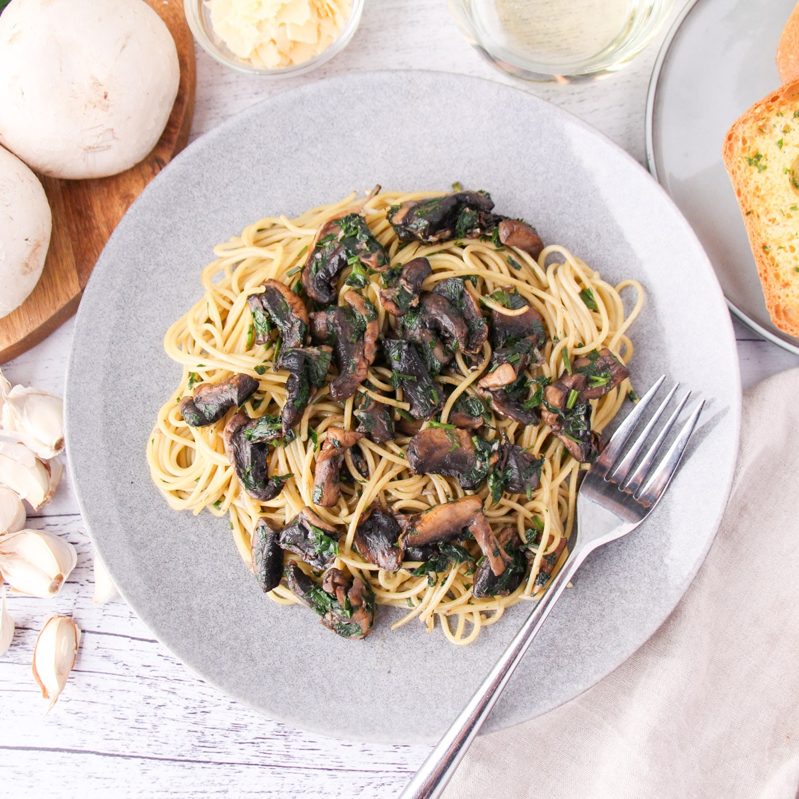

Mushroom Aglio Olio Recipe

Description
This is an italian dish that is perfect for vegans. This dish uses mushroom instead of meat, but you can still substitute it with meat.
Ingredients
- 200ml of pasta.
- 100gr of white mushroom.
- olive oil.
- garlic.
- dried chilli.
- seasalt.
- basil.
Steps
- cut and dice the brown onion and garlic.
- dice the cucumber.
- cut the tomato vertically.
- dice the meat into small chunks.
- put vegetable oil in the pan and turn on the stove into high heat and wait until the pan started to get hot.
- put the diced meat into the pan and pan fry it until it started to get cooked.
- lower the heat into medium and put the onion and garlic into pan.
- stir fry it for 5 minutes or until the onion and garlic have golden color.
- put the rice and salt into the pan and stir fry it for 5 minute.
- add the soy sauce, sweet soy sauce and oyster sauce then stir it for 5 minutes.
- add the sesame oil and continue stirring until it glistens.
- add the spinach and cucumber into the pan and keep stirring for 3 minutes.
- put the fried rice onto a plate then put the sliced tomato in the side.
Home